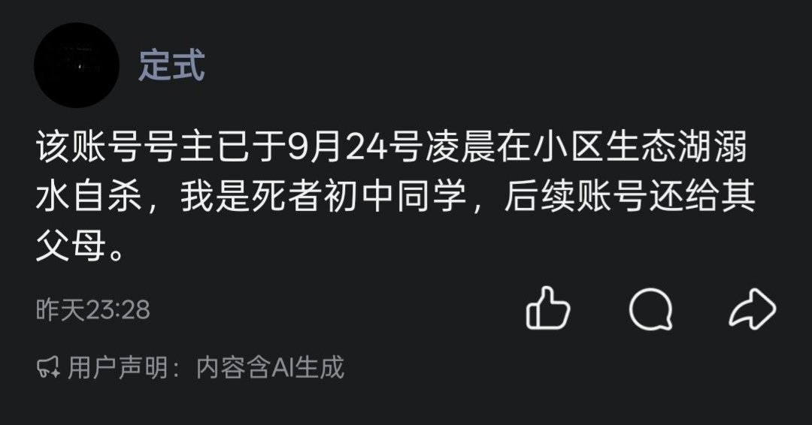

amber水母🍥
@amber_medusozoa
RT @VoidTimelessSea: 讣告：
念什姐姐@QiNian1604 ，已确认于2026年9月24日投湖自尽…
希望她可以在那一边…快乐幸福健康的，成为自己理想中的女孩子…
希望我们下辈子还能再相见。
R.I.P.

星落时海🏳️⚧️
@VoidTimelessSea
讣告：
念什姐姐@QiNian1604 ，已确认于2026年9月24日投湖自尽…
希望她可以在那一边…快乐幸福健康的，成为自己理想中的女孩子…
希望我们下辈子还能再相见。
R.I.P. https://t.co/Vawbuio1qQ